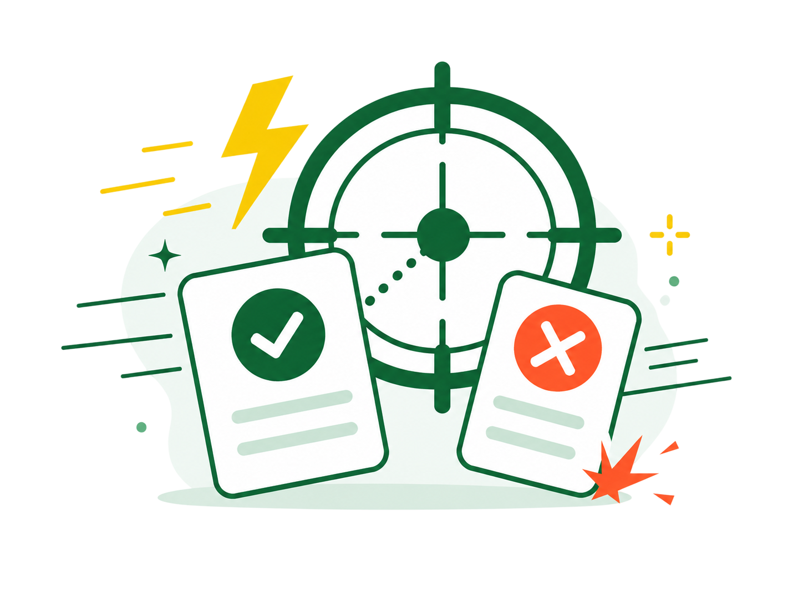
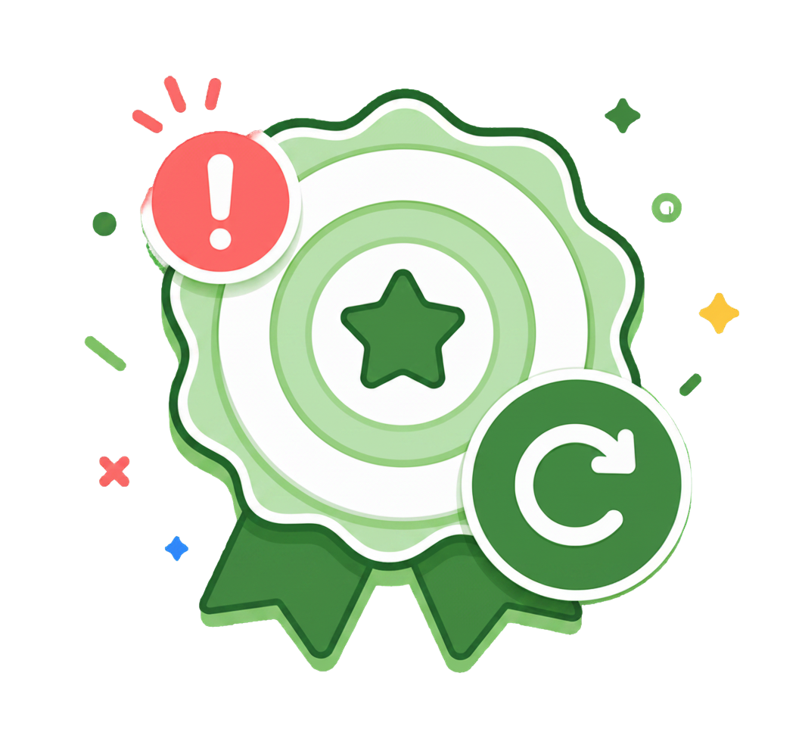

Logic Sniper
Spot traps. Eliminate noise.

Pick off weak distractors and lock onto the standard answer
Expert Tip
Eliminate options that use Absolute Qualifiers like "Always" or "Immediately."
LOGIC SNIPER
How it works
Learn the duel rules before you start.
How to Play
Read the prompt
Each round gives you one project situation.
Review the options
Look for traps, absolutes, and weak logic.
Eliminate or lock
You have 20 seconds for each prompt
Know the Difference
Eliminate
Use X to remove weak, extreme, or misleading options.
Lock Answer
Use ✓ when you find the strongest standard-aligned answer.
ELAPSED 00:00
PRECISION 0%
Streak x0
Tactical Logic Feed
Eliminate weak options, lock the strongest answer.
Here's why:
Mission Secured!
You met the precision target and cleared the duel.
—
—
—
Recalibration
Required
You missed the precision target for this duel.

—
—
—